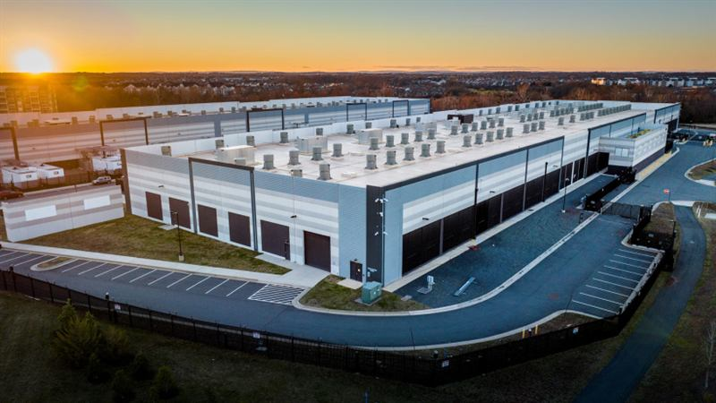
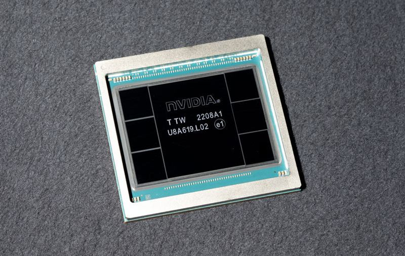
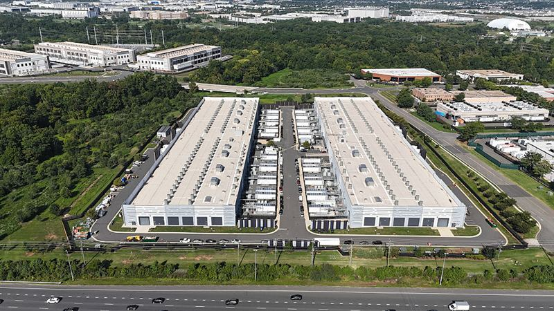

三、算力与芯片
亚马逊被曝考虑把 80 亿美元 Blackwell 芯片「剥离并回租」
亮点《金融时报》报道，亚马逊正寻求把价值约 80 亿美元（约合 537 亿元人民币）的英伟达 Grace Blackwell AI 芯片剥离至一家特殊目的实体（SPV），再从该 SPV 回租这些芯片。
影响推测这类「售后回租」结构常用于把重资产移出资产负债表、改善现金流与折旧节奏，说明超大规模 AI 资本开支正给财务带来压力；若被同业效仿，可能改变 AI 数据中心的融资与会计处理方式。其中是否存在会计美化空间，需待更多细节披露。

美国逮捕一名科技 CEO，涉向中国走私 3 亿美元英伟达芯片
亮点美国逮捕一名科技公司 CEO，指控其将价值约 3 亿美元的英伟达芯片走私进入中国。Ars Technica 指出，随着逮捕持续发生，英伟达面临的芯片走私问题并未消退。
影响推测出口管制的执法正从企业与渠道层面延伸到个人刑责，威慑力上升；但也侧面说明高端算力在灰色市场的需求依然旺盛。对合规供应链而言，审查成本将继续增加。

英伟达发布 64GB 版 DGX Spark 桌面 AI 超算，起售价 4999 美元
亮点英伟达正式推出 64GB 内存版 DGX Spark 桌面 AI 计算机，起售价 4,999 美元（约合 33,566 元人民币），将于 10 月 23 日发售；宏碁、戴尔、华硕、技嘉、微星、H3C 等 OEM 厂商均会推出基于该平台的整机。
影响推测桌面级 AI 算力被明确定价到 5000 美元档，面向开发者与本地推理场景；能否成为「本地跑大模型」的主流形态，取决于端侧模型效率与云端的性价比对比，短期更可能先服务于专业与开发人群。
亚马逊 10 亿美元「平息数据中心反弹」计划反遭更多批评
亮点亚马逊宣布一项约 10 亿美元的计划，试图缓解社区对数据中心的反对声音。Ars Technica 报道称，虽然其承诺终止保密协议受到肯定，但被批评为淡化数据中心的污染问题，反而招致更多反弹。
影响推测AI 基建扩张与地方社区、能源、环境之间的矛盾正在显性化，单纯以资金「公关」难以化解信任赤字；这可能推高新建数据中心的社会与合规成本，并影响项目落地节奏。

四、平台安全与开源生态
苹果收紧 macOS「完全磁盘访问权限」，直接指向 AI 智能体风险
来源：TechCrunch（另见 IT之家） ·
原文亮点苹果宣布为 macOS 的「完全磁盘访问权限」增加新的管控，理由是能力越来越强的 AI 智能体会让「对用户文件、信息、邮件、浏览记录的广泛访问」风险更高。IT之家指出，该调整覆盖 macOS 27 等系统，用户需要更明确的操作才能完成授权。
影响推测这标志操作系统厂商开始把「AI 智能体」当作新的威胁模型来设计权限体系；对依赖全盘访问的备份、脚本与自动化工具会造成摩擦。社区争议集中在安全与可用性之间，以及是否借安全之名强化平台控制。
HN 热文：每家公司最终都会变成「模型外面的一层 harness」
来源：Hacker News（blog.sshh.io） ·
原文亮点一篇被 HN 推上热榜的文章主张，SaaS 业务的终局是「围绕模型的一层 harness（外骨骼／编排层）」：harness 会从「可以买来的内部工具」变成「像产品工程团队或 GTM 团队一样不可外包」的核心能力。该帖获 105 分、77 条讨论。
影响推测该观点把竞争焦点从「模型本身」转向「把模型组织进业务流程的能力」，与近期涌现的 Agent 网关、决策模型等方向一致；但评论区不乏反驳——有人认为「软件工厂」并不存在，把公司等同于一层套壳是危险的自我设限。

HN 热文：Redis 作者发布 ds4，让本地也能跑大模型
来源：Hacker News（dwarfstar.sh） ·
原文亮点Redis 作者发布了名为 ds4 的项目（dwarfstar.sh），主打在本地运行 LLM。该帖获 162 分、41 条讨论，热度显示「本地推理」仍是开发者社区的高关注方向。
影响推测由 Redis 级别的系统作者切入本地推理，可能带来更重工程效率、更少依赖的实现路径；评论区则聚焦量化质量之争，真实效果仍需以独立基准为准。也有人呼吁补齐 Intel／AMD 支持。
五、产品与人才
Shopify 推出 Canvas：与 AI 对话就能搭出网店
亮点Shopify 发布 Canvas 建站工具，商家可与其 AI 智能体 Sidekick 对话来创建和定制线上店铺，并实时看到修改结果。
影响推测把「建站」进一步降维成对话式操作，是电商 SaaS 用 AI 巩固商家黏性的典型动作；真正的差异点在于能否把 AI 生成的内容顺畅接入支付、库存、物流等既有链路，而非仅仅生成页面。
微软纳德拉重申：Copilot 是「面向工作的新操作系统」
来源：IT之家（引 Windows Latest） ·
原文亮点微软 CEO 纳德拉再次把 Copilot 称为「面向工作的新操作系统」；而 Windows Latest 指出，该应用实质上是 Windows 11 上一款部分基于 Chromium 内核的网页应用。
影响推测「操作系统」的定位更多是战略叙事，用来锚定微软把 AI 作为工作入口的野心；但产品形态与叙事之间的落差，也是外界质疑其 AI 变现能力的原因之一。后续要看 Copilot 能否真正统一数据与工作流，而不只是入口。
Anthropic 拟斥资 1 亿美元培训万名工程师
亮点Anthropic 宣布推出 Claude Frontier Academy（Claude 前沿学院），计划投入 1 亿美元（约合 6.71 亿元人民币）培训 1 万名工程师，帮助企业把 AI 项目从构想推进到业务落地。
影响推测制约企业 AI 落地的瓶颈正从模型能力转向「会用的人」，厂商开始自建人才与生态管道；这既是为自家模型扩大装机量，也是在企业侧建立切换成本，属长期生态投资。
谷歌汇总 9 月 AI 进展：以「科学加速」与多语言普惠为主线
亮点谷歌发布 9 月 AI 更新汇总，强调以 AI 加速科学研究、改善生活，并推动「人人、每种语言」都能用上 AI（相关议题还包括 AI 与社会影响、Google AI & Economy 团队等）。
影响推测与 OpenAI、Anthropic 侧重模型与安全不同，谷歌把叙事重点放在科学、普惠与经济研究，属于差异化定位；汇总性内容信息密度有限，但可看出其把「社会影响」作为长期竞争维度。


chrisjj有些人自己选择运行已知不可靠的程序并承担后果，却让所有明智到不去运行它们的人一起付出代价。
snypher我就想用一台我能自由访问整块磁盘的电脑，而不必担心某家公司认为我不该这么做。
xuki现在已经够麻烦了；除非苹果彻底取消这个选项，否则我看不出这能改善什么，用户根本不看提示。
peterfisher我完全把这看成苹果在阻止竞争，而不是为了安全。我们已经被 TCC 弹窗烦了无数次，连「node」之类的东西都让人无法理解。